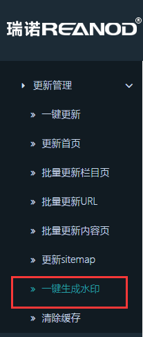

第一部分 网站管理
3.9.3一键生成水印的使用
第2条情况下，无需使用“一键生成水印”功能，上传之后只需更新栏目、内容即可。
一键生成水印适用于：网站上已有图片水印的更改，如：
一部分有水印，一部分没有水印，想要改为全部带水印，只需水印“开启”状态下，一键生成水印；
一部分有水印，一部分没有水印，想要改为全部不带水印，只需水印“关闭”状态下，一键生成水印；
想要更换现有图片的水印，只需上传新的水印图片，并在水印“开启”状态下，一键生成水印；

注意：若没有上传水印图片，这里一定要选择“关闭”,否则发布产品时上传缩略图会出现404错误。